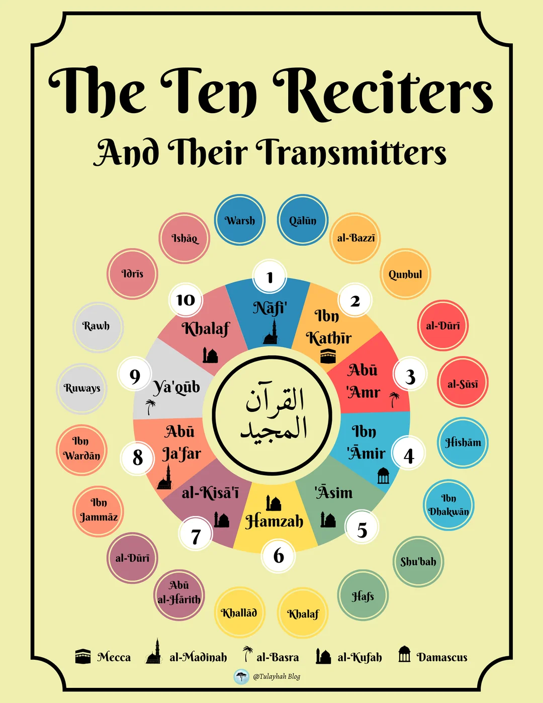

القراء العشرة
Les dix lecteurs authentiques du Coran
et leurs deux rapporteurs. Cliquez sur un nom pour ouvrir sa biographie.

Où les lit-on ?
À retenirIl est interdit de faire l'exégèse du Coran par simple ijtihad personnel : cela revient à parler d'Allah sans science.